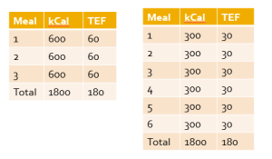
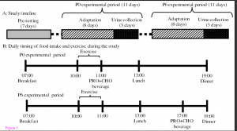
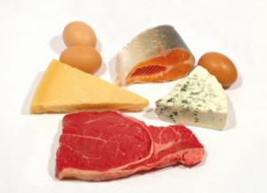

Progressive overload is a well-established principle for achieving continued progress in resistance training programs. In general terms, progressive overload can be defined as consistently challenging the neuromuscular system beyond its present capacity. It’s commonly accepted that this...
Brad Schoenfeld, Ph.D, C.S.C.S., is an internationally renowned fitness expert and widely regarded as one of the leading authorities on body composition training (muscle development and fat loss). He is a lifetime drug-free bodybuilder, and has won numerous natural bodybuilding titles.
We are glad that more and more people are demanding and applying evidence in the exercise and nutrition field. That been said, there remains a lot of misunderstanding and misconceptions about an evidence-based Practice (EBP). In this article, we will address some of the common misconceptions and criticisms of EBP. Here we go:
Why do we need EBP? Why can’t we just use anecdotal evidence or expert opinion?
In fact, we’ve used anecdote or expert opinion as ‘evidence’ to treat people throughout the history of medicine. But this approach clearly didn’t work well as shown by hundreds of examples of medical mistakes we made in the past. For example, smoking was ‘good’ for heath until studies showed otherwise; bloodletting was the standard medical treatment for almost 2000 years by the foremost doctors of the West, and so forth. In short, EBP evolved because anecdotal evidence or expert opinion were not producing ‘results’.
The definition of EBM (Evidence Based Medicine) by David Sackett reads: “EBM is a systematic approach to clinical problem-solving that allows integration of the best available research evidence with clinical expertise and patient values”. This principle can be applied across many scientific disciplines, including exercise and nutrition, to optimize results.
What is the evidence?
Many people wrongly assume that the term “best available evidence” in EBM/EBP is limited to research-based evidence. In fact, evidence can be obtained from a well conducted randomized controlled trial, an unsystematic clinical observation, or even expert opinion. For example, the evidence could come from a controlled trial, your favorite fitness guru, or a physiological mechanism. However, the critical point is that the importance or trust we place on the evidence differs based on the type of evidence. We will talk more about this as we talk about the evidence hierarchy.
What about values and preferences?
Every patient or client assigns his/her own values, preferences, and expectations on outcomes and decisions.
For example, some might place a high value on muscle growth, whereas others would value their general health as most important. Some would value building their upper body muscles more than their lower body muscles. Others may value the social aspect of working out at a gym more than the muscle and strength gains.
And rightly so, these personal decisions have no wrong or right and should be listened to and respected. The job of a fitness professional is to help clients achieve whatever goals they desire; we cannot impose our own values no matter how contrasting beliefs and opinions maybe.
What about clinical expertise? And what is the ‘art’ of EBP that people always talk about?
Clinical expertise is what many refer to as the art of EBP. So, does the art of EBP mean applying what has worked for your clients? Clearly not.
Clinical expertise involves basic scientific knowledge, practical expertise, and intuition to:
• diagnose the problem (for example, why can’t this person squat deep, how to correct exercise technique, why he/she is not gaining strength or losing weight.),
• search for the relevant research evidence (how many sets to gain muscle for an advanced trainee, or which exercise targets specific muscles) and critically analyze the research evidence for methodological issues (was the study in beginners, was the outcome measured relevant)
• understand both the benefits, the risks involved, and other alternative approaches to the goal (a Crossfit type workout might be motivating and improve general cardiovascular endurance, but has a high risk of injuries)
• alter the program based on the client feedback and results (reducing the number of sets or modifying the exercise (angles, ROM and do forth) for an older person or someone with pre-existing shoulder injuries.)
• Listen and understand clients value and preferences, clearly communicate the risk, cost, benefits in a simple manner, and use a shared decision approach to come to a decision
And this is called the art of evidence-based approach. As you can see, it forms an integral part of EBP and no amount of research can replace it. Likewise, no amount of clinical expertise can replace research evidence.
What is the evidence hierarchy? And why are RCT’s (Randomized Clinical Trial) at the top of the pyramid?
An evidence hierarchy is one of the foundational concepts of EBP. And there are three important points to keep in mind:
• First, as shown, the different types of evidence are arranged in an orderly fashion. As we go up the hierarchy, the trust or the confidence we place in the study results go up too. RCT’s are the most valid research design, as they allow the ability to infer causality. And expert evidence is the least trustworthy and occupies the bottom position. Meta-analyses- a collection or a group of RCT’s-are generally considered the highest form of evidence, as they synthesize the entire body of literature on a given topic and quantify the results based on a statistical measure of practical meaningfulness. Meta-analyses can be particularly important in exercise- and nutrition-related topics, as the sample sizes are often small and thus pooling the data across studies provides greater statistical power for inference.
• Second, it is important to note that depending on the quality of the study, an RCT can be downgraded, too. A poorly designed study will never provide a high level of evidence, and in fact can impair the ability to draw proper evidence-based conclusions. The hierarchy therefore is not set in stone.
• Third, there is always evidence. So the best available evidence is what is available and need not come from an RCT (Randomized Controlled Trial). But based on the type of evidence, our confidence in the results and our recommendations will differ accordingly.
What if there are no RCT’s? How do I evaluate a program or diet?
First, as mentioned before, there is always evidence. If there are no RCT’s, you simply move down the evidence hierarchy. But as you go lower in the hierarchy, uncertainty about the validity of the evidence goes up as well. Second, you also must compare the benefits, risks, cost, scientific plausibility, and other alternative programs before making recommendations. Below are a few examples where the absence of an RCT does not preclude recommendations.
Example 1: If a client comes with a new program that uses 5 lb weights to increase strength, we know from basic science that without load progression, muscle and strength gains will be nil. Such a program would go against the most fundamental theory of muscle growth. So you can make a strong recommendation against the program, even without an RCT.
Example 2: Recently, the Ebola virus vaccine was used before conducting an RCT. How is that possible? Here is a classic example of weighing the benefits, risks, alternative approaches, and making a strong recommendation with weak evidence. In this case the risk is death, the benefit is obvious, and there are no alternative approaches. Thus, the risk/reward strongly favored giving the vaccine. And 99% of the informed patients would agree with the recommendation.
Example 3: If a client wants to try the Xfit program, you can convey the lack of studies (weak evidence), the risks involved, the time required for learning the right technique, and give other programs which are in line with her/his goals. If he/she still wants to do it, he/she shouldn’t be critiqued for their decision.
Example 4: An observational study shows that eating meat raises cancer. Considering observational studies are lower in the hierarchy no matter how well the study is conducted, recommendations cannot be more than just suggestions.
What if there are no studies and my client wants to try a new program?
As previously noted, if a person understands the uncertainty due to the lack of studies or weak evidence, availability of alternative programs that fit his/her goal, the cost, and risks, he/she can make an informed personal choice. Keep in mind that majority of the questions in exercise and nutrition are of weak evidence. In fact, it is the same for the medical field too. But what is important is to clearly know and convey what your recommendations are based on.
There are a lot of factors like genetics, diet, motivation that can influence your results. A study hence…
Many people are unaware that in a randomized controlled trial, the randomization serves a crucial purpose: The randomization ensures, at least theoretically, that both the known variables and unknown variables that can affect muscle growth or strength are equally distributed into both groups. That is, if there are unknown genetical factors that can drive muscle growth, it is highly likely these genetically gifted individuals will be distributed evenly. This is the reason why RCT are considered to be the gold standard to study cause and effect. Hence, the results of the study can be pinned to the intervention or treatment
There are numerous problems with scientific study. So you cannot use the results of a study to train your clients?
Yes. But one of the basic steps in EBP is to critically analyze the study: If the study has methodological issues or has a different population than your client, you downgrade the evidence accordingly and lower your strength of recommendations.
Most of the studies in bodybuilding/strength training are on untrained individuals.
Yes. And rightly so, caution should be used when extrapolating recommandations to trained individuals. Exercise science is a relatively new field and studies in trained individuals are small in number, but accumulating. Generalizability (i.e. the ability to apply findings from a study to a given population) must always be taken into account when using research to guide decision-making.
I don’t care about “why” it works or the science behind. All I care about are results.
As previously mentioned, EBP evolved to get better results. It didn’t evolve to explain how or why a treatment works. There are 1000’s of life saving treatments and drugs where the underlying mechanism(s) are just unknown.
Studies are looking at an average of the sample. There is a lot of individual differences.
Yes. In fact, n=1 studies occupy the top of the evidence hierarchy because it applies to the specific individual in question. But these are hard and almost impossible for certain outcomes like muscle growth or disease prevention. There are two concerns with so-called trial and error method that is often talked about.
• First, even if you gain benefits with a certain program, in many cases, it is extremely hard to figure out what was the variable that made the difference. Was it the specific exercise, the change in diet, the placebo effects, genetics, or some unknown variable?
• Second, it may not be clear if you are indeed making an improvement depending on the outcome. For example, gains in muscle come very slowly for trained individuals (like years for a several pounds). Hence, you will have to run a program for a few years to see if it works or not. However, controlled research often uses measures that are highly sensitive to subtle changes in muscle mass, and thus can detect improvements in a matter of weeks.
The program worked for me!
What was the outcome measure? Strength, muscle growth, weight loss? What are you comparing against? Against your previous results? What was the magnitude of the benefit? Without knowing answers to these questions, the meaning of the word ‘worked’ is unclear.
Further, if it indeed worked, we still don’t know what made it work, or if it will work for someone else. So your personal anecdotes are often fraught with problems and unfortunately mean very little. And importantly, just because something “worked” doesn’t mean that another approach might not work better.
This X supplement was shown to increase muscle growth in an animal study. Should I use it?
Research in animal models is almost at the bottom of the evidence hierarchy. It is very weak and hence the uncertainty is high, and deserves no greater than a weak recommendation. Although animal models can serve an important purpose in preliminary research, evidence based practice should rely primarily on human studies when developing applied guidelines.
A lot of the research is sponsored by nutritional and exercise machine companies. Hence not trustworthy.
Yes. If there is a conflict of interest, the study is downgraded.
I saw a supplement study which showed a statistically significant weight loss. Can I use that supplement for my client?
No, you also have to look at how much weight the subjects lost. The term “significance” is a function of the probability of results occurring by random chance; it is not necessarily related to the magnitude of the effect. Provided a large enough sample size, results of a study can be statistically significant even with just a 1 lb weight loss over a 1 year period. This is known as ‘clinical significance’.
Would you take a supplement to lose 1 lb in a year? Depending on the cost, the burden of taking a pill every day, and how much you value weight loss, you may or may not.
EBP does not consider a science-based approach.
EBP does consider a science-based approach. A science-based approach provides strong evidence when the program or treatment violates fundamental principles or universal laws. For example, homeopathy.
However, EBP does not support evidence just based on biological plausibility or mechanistic evidence. For example, if a new diet tells you to eat as much as you want to lose weight, it goes against fundamental laws of thermodynamics. You do not need an RCT to make strong recommendations against this diet
“This house believes that in the absence of research evidence, an intervention should not be used” This was the motion of a debate which took place at the end of the recent PhysioUK2015 Conference in Liverpool.
As you know by now, EBP does not exclusively rely on RCT’s. To quote the famous saying in EBP: “There is always evidence”. It is an unfortunate misrepresentation of EBP/EBM to assume that without RCT’s, a treatment cannot be recommended. For example, smoking has perhaps the greatest detrimental effect on health of any social habit, and health-based organizations universally recommended against its use. But we do not even have even a single RCT on smoking!
Effects of smoking are from observational studies. But since the magnitude of harm is very high, it upgraded in the evidence pyramid. Once again, this shows why the hierarchy is not set in stone.
‘Parachute use to prevent death and major trauma related to gravitational challenge’. This is the title of the paper published in BMJ. The paper satirically argues that parachute use has not been subjected to rigorous evaluation by using RCTs’ and therefore has not been shown to save lives. Critics of EBP have used this as a criticism of EBP and the reliance of RCT’s.
EBP has always maintained that RCT’s are not required when the magnitude of benefits is very high.
For example, insulin injection for diabetes, Heimlich maneuver, and anesthesia are all examples of treatments where the magnitude of benefit is very high, and hence RCT’s are not required nor asked for.
I do not have enough knowledge to critically analyze studies.
In closing, we hope the article has helped you better appreciate and understand this simple framework called evidence based practice or evidence based medicine. EBP is currently the best approach we have to make decisions related to health, fitness or strength and conditioning. A good EBP practitioner should have a strong understanding of both the practical and the scientific aspects of exercise and nutrition; and more importantly, an untiring commitment and empathy to your clients and their values and preferences.
A long-held belief in bodybuilding circles is that your body can only absorb a fairly small amount of protein in a single feeding. The exact dosage varies depending on who you listen to, but it’s generally purported to be somewhere around 20-30 grams of protein per meal.
While the claim is often taken as gospel, let’s take a close look at the research to draw evidence-based conclusions on the topic.
First and foremost, it’s important to note that from a nutritional standpoint the term “absorption” refers to the passage of nutrients from the gut into circulation – and in this context, there is virtually no limit to protein absorption. Once digested, the constituent amino acids of a given protein are transported through the intestinal cells (enterocytes) and then enter the bloodstream – pretty much all the amino acids consumed become available for use by tissues. The only potential issue with absorption is when you ingest individual free-form amino acids, as this can cause competition at the enterocytes whereby the amino acids present in the highest concentrations are absorbed at the expense of those that are less concentrated (6).
The more relevant question here is whether there’s in an upper limit to how much protein your body can use for muscle-building purposes. This question is a lot more complex and an evidence-based answer requires a good deal of extrapolation based on the limitations of current research.
Some researchers have proposed that muscle protein synthesis tops out at approximately 20-25 grams of protein per serving for young adults. Protein consumed above this dosage is thought to be oxidized for energy rather than used for tissue-building purposes – a phenomenon called the “muscle-full” effect (11). In what is often cited as the definitive support for this contention, Areta et al (1) investigated the effect of different protein boluses on resistance-trained men. All subjects performed a bout of resistance training and were then confined to rest where they consumed 80 grams of protein over a 12 hour recovery period in one of the following three conditions: 8 servings of 10 grams every 1.5 hours; 4 servings of 20 grams every 3 hours; or 2 servings of 40 grams every 6 hours. Over the course of the recovery period, the greatest effect on stimulation of muscle protein synthesis was seen in the group consuming 4 servings of 20 grams of protein. This would seem to indicate that there was no added benefit to consuming the higher dosage (40 grams), and that the additional amino acids were indeed oxidized for energy.
Case closed, right?
Not so fast.
Several variables influence the metabolism of protein and amino acids including the composition of the given protein source, the composition of the meal, and the dose of the protein or amino acids consumed (4). Individual factors such as age, training status, and the amount of lean body mass also come into play. The subjects in the Areta et al study consumed only whey protein during the post-workout period. Whey is a fast-acting protein, with an absorption rate estimated to be up to 10 grams an hour (4). A 20 gram whey bolus therefore would be completely absorbed in a two hour period. Although this rapid assimilation can transiently spike rates of muscle protein synthesis, it also causes a greater oxidation of the constituent amino acids and thus can result in a lower net protein accretion compared to a slow-absorbing protein source (5). On the other hand, cooked egg protein is absorbed at a rate of approximately 3 grams an hour (4). Thus, the same 20 gram protein bolus consumed as an omelet would take over 7 hours for full absorption, potentially allowing for a greater per-meal dosage without causing undue amino acid oxidation. Moreover, in real life you’ll generally be consuming whole foods that contain a combination of carbs and fats along with the protein component. This substantially slows down digestion, resulting in a much more time-released effect on amino acids into the body. In addition, the study only provided only 80 grams of protein over the course of the day to a group of resistance-trained men. This amounts to less than ½ gram per pound of body mass – well below the amount needed to maximize post-workout muscle protein synthesis (9).
A recent study by Kim et al (7) provides contrary evidence on the topic. Subjects came to the lab on two separate occasions: during one session they consumed 40 grams of beef protein and in the other session they consumed 70 grams of the same protein source. One group consumed the protein after a total-body resistance training bout while another did so in the absence of exercise. Results showed that while both conditions promoted increases in whole body nitrogen balance – a marker of anabolism – the higher protein intake resulted in a significantly greater anabolic response, which was largely attributed to a greater reduction in protein breakdown. A major difference between this study and that of Areta et al (1) is that subjects consumed mixed meals containing not only protein, but carbohydrates and dietary fats as well. Thus, the transit time of protein release would necessarily be much slower in this study, potentially accounting for dose-dependent differences in anabolism.
A limitation of the Kim et al study is that measures of anabolism were not specific to muscle but rather taken at the whole-body level. It is likely that much of the superior anabolic response noted with the higher protein intake was from tissues other than muscle, most notably the gut. However, protein turnover in the gut can allow these additional amino acids to be released into the bloodstream and subsequently used for muscle protein synthesis. The extent to which this phenomenon affects muscle-building is not clear, but it conceivably provides the potential for enhanced muscular gains.
While the results of the aforementioned studies provide a sound basis for speculation, it is important to note that measures of acute muscle protein synthesis do not necessarily correlate with muscular gains achieved from consistent lifting (10). To get a true grasp on the upper limit to protein intake in a single sitting, we need to look at long-term training studies that measure actual changes in lean mass.
Several studies have endeavored to investigate the effects of per-meal protein dosage on body composition over time. Arnal et al (2) found that feeding elderly women the bulk of their daily protein (79%) in a single meal (skewed condition) promoted greater retention of lean body mass versus spreading out consumption evenly over four daily meals (spread condition). A follow-up study by the same lab found no differences between skewed and spread protein feedings in a cohort of young women (3). The combined findings suggest that at the very least, consuming the majority of daily protein as a large bolus is not detrimental to lean mass accretion. Unfortunately, total protein intake in these studies was on the low side (~1 g/kg/day), and none employed a resistance training program. Thus, it is difficult to generalize findings to resistance-trained individuals seeking to maximize muscle mass.
Studies on intermittent fasting shed additional light on the topic. These protocols generally involve consumption of nutrients in a very limited time-frame – usually less than 8 hours – followed by a prolonged fast. A recent systematic review found that the majority of intermittent fasting protocols had similar effects on lean body mass compared to traditional eating patterns (12). But again, the studies involve suboptimal protein intakes without a resistance training component – and here the subjects were all in a caloric deficit. Not very applicable to the hard-training lifter.
Considering the limitations of the body of literature, here’s the take-home message based on current evidence: While certainly a threshold exists beyond which protein will be oxidized for energy rather than used for tissue-building purposes, the amount appears to be well above the often cited 20-30 gram limit provided that nutrients are obtained from whole-food based mixed meals. Given that the anabolic effect of a protein-rich meal lasts approximately 5-6 hours (8), a good rule-of-thumb for maximizing muscle growth would is to consume a minimum of 3-4 evenly distributed daily meals containing at least 30 grams of a high quality protein. Within these boundaries, it probably doesn’t matter how you allocate the rest of your protein consumption on a per-meal basis – just make sure you take in close to a gram per pound of body weight per day.
1. Areta, JL, Burke, LM, Ross, ML, Camera, DM, West, DW, Broad, EM, Jeacocke, NA, Moore, DR, Stellingwerff, T, Phillips, SM, Hawley, JA, and Coffey, VG. Timing and distribution of protein ingestion during prolonged recovery from resistance exercise alters myofibrillar protein synthesis. J. Physiol. 591: 2319-2331, 2013.
2. Arnal, MA, Mosoni, L, Boirie, Y, Houlier, ML, Morin, L, Verdier, E, Ritz, P, Antoine, JM, Prugnaud, J, Beaufrere, B, and Mirand, PP. Protein pulse feeding improves protein retention in elderly women. Am. J. Clin. Nutr. 69: 1202-1208, 1999.
3. Arnal, MA, Mosoni, L, Boirie, Y, Houlier, ML, Morin, L, Verdier, E, Ritz, P, Antoine, JM, Prugnaud, J, Beaufrere, B, and Mirand, PP. Protein feeding pattern does not affect protein retention in young women. J. Nutr. 130: 1700-1704, 2000.
4. Bilsborough, S, and Mann, N. A review of issues of dietary protein intake in humans. Int. J. Sport Nutr. Exerc. Metab. 16: 129-152, 2006.
5. Dangin, M, Boirie, Y, Guillet, C, and Beaufrere, B. Influence of the protein digestion rate on protein turnover in young and elderly subjects. J. Nutr. 132: 3228S-33S, 2002.
6. Gropper, SS, Smith, JL, and Groff, JL. Advanced Nutrition and Human Metabolism. Belmont, CA; Wadsworth Cengage Learning, 2009.
7. Kim, IY, Schutzler, S, Schrader, A, Spencer, HJ, Azhar, G, Ferrando, AA, and Wolfe, RR. The anabolic response to a meal containing different amounts of protein is not limited by the maximal stimulation of protein synthesis in healthy young adults. Am. J. Physiol. Endocrinol. Metab. 310: E73-80, 2016.
8. Layman, DK. Protein quantity and quality at levels above the RDA improves adult weight loss. J. Am. Coll. Nutr. 23: 631S-636S, 2004.
9. Lemon, PW, Tarnopolsky, MA, MacDougall, JD, and Atkinson, SA. Protein requirements and muscle mass/strength changes during intensive training in novice bodybuilders. J. Appl. Physiol. 73: 767-775, 1992.
10. Mitchell, CJ, Churchward-Venne, TA, Parise, G, Bellamy, L, Baker, SK, Smith, K, Atherton, PJ, and Phillips, SM. Acute post-exercise myofibrillar protein synthesis is not correlated with resistance training-induced muscle hypertrophy in young men. PLoS One 9: e89431, 2014.
11. Morton, RW, McGlory, C, and Phillips, SM. Nutritional interventions to augment resistance training-induced skeletal muscle hypertrophy. Front. Physiol. 6: 245, 2015.
12. Seimon, RV, Roekenes, JA, Zibellini, J, Zhu, B, Gibson, AA, Hills, AP, Wood, RE, King, NA, Byrne, NM, and Sainsbury, A. Do intermittent diets provide physiological benefits over continuous diets for weight loss? A systematic review of clinical trials. Mol. Cell. Endocrinol. 418 Pt 2: 153-172, 2015.
Conventional wisdom states that eating small, frequent meals helps to optimize weight loss. In theory, eating frequently enhances a phenomenon called the thermic effect of food (TEF), which results in more energy expended after consumption of the meal. What’s more, some postulate that multiple meals spaced throughout the day prevents the body from going into “starvation mode,’ thereby keeping metabolism perpetually elevated.
There also is speculation that frequent feedings are beneficial for anabolism. This is based on the premise of a limit to how much protein can be used to maximize protein synthesis. It therefore follows that large boluses of protein result in extensive oxidation of amino acids, preventing their use in tissue building purposes.
Despite a seemingly logical rationale, the efficacy of consuming frequent meals to optimize body composition has not been well established in long-term studies. In an attempt to gain clarity on the topic, my lab recently carried out a meta-analysis where we pooled the data from all meal frequency studies. The analysis was a collaboration with my colleagues and frequent partners-in-science, James Krieger and Alan Aragon. Here’s the scoop…
What We Did
A thorough search of all English language journals was conducted for studies with the following inclusion criteria:
1. Randomized controlled trial
2. Compared unequal feeding frequencies of less than or equal to 3 meals a day with greater than 3 meals a day
3. Had a study duration of at least 2 weeks
4. Reported a pre- and post-intervention measure of body composition (body mass, body fat, lean mass)
5. Was carried out in human participants >18 years of age
A total of 15 studies were identified that met the criteria outlined and provided adequate data for analysis – several of these studies went back as far as the early 1960’s! The studies were individually coded and a randomly selected number of them were subsequently recoded to ensure accuracy. The coded studies were then pooled and statistically analyzed to determine what, if any, body composition differences existed between feeding frequencies.
What We Found
There was no effect of the number of daily meals on body mass (i.e. weight). Alternatively, initial analysis did show a positive association between feeding frequency and reductions in fat mass. Here’s the kicker: a sensitivity analysis showed that a single 2-week study by Iwao et al. highly affected results – when this study was removed from analysis, the effect of meal frequency was no longer significant. Similarly, body fat percent was initially shown to correlate with greater decreases in body fat percentage, but the results were highly affected by a single study by Arciero et al. whose removal rendered the results insignificant. There was a trend for greater increases in fat free mass with higher meal frequencies, but again the results were primarly attributed to the Iwao et al. study.
Commentary 
The results of our analysis do not support a tangible benefit to eating small frequent meals on body composition as long as daily caloric intake and macronutrient content is similar. The theory that a greater feeding frequency increases post-prandial thermogenesis is fundamentally flawed. As shown in the accompanying table, a typical meal results in a TEF of approximately 10%. Since the TEF is dependent on the number of calories consumed in the meal, the net thermic effect is the same for 3 versus 6 meals on a calorie-equated basis. There also is no evidence that the body goes into “starvation mode” when you go without food for more than a few hours as commonly claimed in fitness circles. I covered the research on this in a recent T-Nation article.
The studies in question lasted varying amounts of time and many used recall food diaries to assess caloric intake, which have been shown to lack accuracy in reporting. However, several studies were carried out in metabolic wards where every morsel of food and every step of activity was carefully monitored – these studies showed no benefit to higher meal frequencies, providing further confidence in the validity of our findings.
A primary limitation of the analysis was that all studies to date were carried out in sedentary individuals. Thus, results cannot necessarily be generalized to those involved in regular exercise, particularly resistance training. There is compelling evidence that the muscles are sensitized to protein intake for at least 24 hours after a lifting session, suggesting a potential benefit to frequent feedings with protein rich foods in the post-exercise period. Whether this translates into greater long-term muscle growth remains to be determined.
It also isn’t clear if our findings are applicable to diets that include higher daily protein intakes. All of the studies analyzed used low to moderate protein doses, with the exception of the study by Arciero et al. Interestingly, this study did show significant improvements in body composition when an energy-equated high-protein diet (approximately 34% of total calories) was consumed in 6 versus 3 daily meals.
Take Home Points
The number of daily meals consumed does not appear to have much if any impact on changes in body fat, at least across a wide spectrum of feeding frequencies. Thus, the decision on how many meals to eat from this standpoint should come down to personal preference: if you find a benefit to having the structure of multiple meals throughout the day, then go for it; on the other hand, if you prefer to eat less frequently, that’s fine as well. The most important factor in this regard is achieving a negative energy balance, as well as ensuring that adequate dietary protein is consumed.
Although our analysis did not show differences between meal frequencies with respect to lean body mass changes, there is a logical basis for a hypertrophic benefit to consuming several protein-rich meals in those involved in regular resistance exercise. The anabolic effects of a meal last a maximum of 6 hours or so. Thus, consumption of at least 3 meals spaced out every 5 to 6 hours would seem to be optimal for keeping protein synthesis continually elevated and thus maximizing muscle protein accretion. This hypothesis needs further investigation in a controlled long-term study.
Science is ever-evolving. New studies are continually carried out to expand on previous research and thus shed additional light on topics of interest. The process can be likened to solving a puzzle, where more and more pieces are provided over time to ultimately fill out the complete picture.
Such is the case with a recently published study titled, Effect of timing of protein and carbohydrate intake after resistance exercise on nitrogen balance in trained and untrained young men. Briefly, the study employed a within-subject design where both an untrained group and a trained group performed regimented resistance training under two different protein-timing conditions. Training was carried out over two consecutive 11 day periods using a push/pull split (lower body on days 1, 5, and 9; shoulders, chest, and triceps on days 2, 6, and 10; back and biceps on days 3, 7, and 11). Subjects were placed on a regimented nutritional plan where they ate breakfast at 7 am, lunch at 1 pm, and dinner at 7 pm. During one of the 11-day training phases subjects consumed a protein supplement immediately after exercise while during the other phase they consumed the shake 6 hours post-workout. Importantly, training was carried out from 10 to 11 am each morning prior to lunch. The table below provides specifics on the study’s protocol.

The results were intriguing. In the untrained group, no differences in nitrogen balance were noted between timing strategies. Conversely, the trained subjects showed a significantly greater positive nitrogen balance when protein was provided immediately after training compared to delaying consumption by 6 hours.
Upon first hearing about the study I was ready to dismiss results because of the very long wait to consume the post-workout supplement. Considering that training was carried out 3 hours after breakfast and that training took an hour, that means the supplement was ingested 10 hours after breakfast. Simple logic dictates that’s not ideal if the goal is to maximize the anabolic impact of training.
Here’s the rub though: Subjects ate lunch 2 hours after the training bout and that meal contained ~30 grams of protein. So in essence, the study actually showed that delaying intake just a couple of hours after a training bout had a significantly detrimental effect on protein balance in experienced lifters.
Interesting!
With that as background, here are some things to keep in mind when drawing evidence-based conclusions. I’ll start by noting that the study was well-designed to assess the desired outcome measure (nitrogen balance). The author took good care to control all relevant variables, in particular food intake (diets were designed by a nutritionist and intake was strictly monitored). This provides good confidence that results were attributed to the independent variable — namely, timing of post-workout protein provision.
It is important to understand, however, that the study measured nitrogen balance over a 3 day training period — not long-term muscle growth. Now there is a correlation between *chronic* nitrogen balance and hypertrophy. The accretion of muscle proteins is predicated on a positive nitrogen balance, whereby protein synthesis exceeds protein breakdown over a given time-frame. However, it is misguided to extrapolate that an *acute* measure of nitrogen balance will necessarily translate into greater muscle hypertrophy over the course of weeks or months. To this point, recent research from Stu Phillips lab shows that acute measures of post-exercise protein synthesis do not correlate well with long-term increases in muscle growth.
In addition, the nitrogen balance technique itself has inherent limitations. Research has shown that the technique results in an overestimation of nitrogen intake and an underestimation of nitrogen losses. Moreover, its ability to accurately determine balance over short time frames has been called into question — and this study evaluated balance over a period of just 3 days. Finally, nitrogen balance comprises many bodily tissues and thus it is not clear if differences are specific to muscle fractions. Whether these factors had an impact on the present study is anyone’s guess. Therefore, results must be interpreted cautiously.
Bottom line is that the study provides some interesting insight for generating hypotheses. In the narrative review I co-authored with Alan Aragon, we discussed that the anabolic effects of a meal last a maximum of about 6 hours, and therefore speculated that this would be the outer limit as to how long you should wait to consume post-workout protein from the time of your last meal. The present study suggests waiting 6-hours between meals has a negative effect effect on protein accretion in trained subjects but not in untrained subjects. Whether this translates into reductions in long-term muscle mass is unknown and can only be determined from a longitudinal study that directly measures changes in muscle hypertrophy.
Fortunately, I am collaborating with Alan Aragon and Colin Wilborn a study set to begin in a few weeks that will investigate this very topic. Stay tuned!
References
Aragon AA, Schoenfeld BJ. Nutrient timing revisited: is there a post-exercise anabolic window? J Int Soc Sports Nutr. 2013 Jan 29;10(1):5.
Mitchell CJ, Churchward-Venne TA, Parise G, Bellamy L, Baker SK, Smith K, Atherton PJ, Phillips SM. Acute post-exercise myofibrillar protein synthesis is not correlated with resistance training-induced muscle hypertrophy in young men. PLoS One. 2014 Feb 24;9(2):e89431. doi: 10.1371/journal.pone.0089431. eCollection 2014. Erratum in: PLoS One. 210;9(5):e98731.
Mori H. Effect of timing of protein and carbohydrate intake after resistance exercise on nitrogen balance in trained and untrained young men. J Physiol Anthropol. 2014 Aug 6;33(1):24. [Epub ahead of print]
Rand WM, Pellett PL, Young VR. Meta-analysis of nitrogen balance studies for estimating protein requirements in healthy adults. Am J Clin Nutr. 2003 Jan;77(1):109-27.
Tomé D, Bos C. Dietary protein and nitrogen utilization. J Nutr. 2000 Jul;130(7):1868S-73S. Review.
The beauty of peer-reviewed research is that it’s self-correcting. Scientists publish papers and then the scientific community scrutinizes the methodologies and conclusions employed. When appropriate, criticism is levied on a study and discussion/debate ensues. This process should be welcomed by researchers; it’s what pushes science forward and enhances our understanding of a given topic.
As many of you know, an area of research that I’ve recently been pursuing is the effects of protein timing on muscle strength and hypertrophy. In 2013 I collaborated with my good friend and colleague Alan Aragon to publish a review on the topic titled, Nutrient Timing Revisited: is there a post-exercise anabolic window?. In short, our review concluded that while muscle is sensitized to anabolism in the post-workout period, current evidence does not seem to support the existence of a narrow “window of opportunity.” I discussed the practical implications of the review in a previous blog post.
The paper stirred a lot of controversy. After all, the concept of an anabolic window of opportunity for nutrient consumption had been somewhat of a sacred cow in the field. Until publication of our review it was widely taken as gospel that you had an hour or less to take advantage of this narrow window; if you missed the window, muscular gains would be compromised.
One of the staunchest proponents of the nutrient timing paradigm is Dr. John Ivy, a professor at the University of Texas and noted sports nutrition researcher. Dr. Ivy literally wrote the book on nutrient timing with publication of his popular text, “Nutrient Timing: The Future of Sports Nutrition” back in 2004 It therefore was no surprise that Dr. Ivy took issue with our paper in an article he published in the American Journal of Lifestyle Medicine.
I welcomed Dr. Ivy’s criticism of our paper. As stated, critical debate of research is what drives science forward. But debate is a two-way street. I felt his critique was heavily biased and that he cherry-picked research to substantiate his claims.
As such, I provided a point-by-point rebuttal to Dr. Ivy’s critique in this blog post. In an effort to be fair and balanced, I emailed Dr. Ivy and gave him the opportunity to write a response to my comments. I offered to post anything he wrote unedited on my blog; unfortunately he never responded to my offer.
Subsequently, I co-authored a meta-analysis on protein timing with Alan Aragon and another good friend and colleague, James Krieger, titled The effect of protein timing on muscle strength and hypertrophy: a meta-analysis. Results showed a small effect for protein timing on hypertrophy, but virtually the entire effect was explained by an increased protein intake in the timing group. I discussed the study in detail in this blog post.
This week Dr. Ivy took to the airwaves to levy criticism of our meta-analysis. Appearing on the Superhuman Radio Network, Dr. Ivy called our paper “flawed” and took several of our methods to task (the discussion of our paper comes in at about the 22 minute mark).
Suffice to say, it’s my view that Dr. Ivy’s criticisms lack merit. What follows is a point-by-point refutation of Dr. Ivy’s claims.
First, Dr. Ivy mentions that “good studies were eliminated from the analysis” In particular, he specifies two studies that didn’t make the cut because they did not provide enough protein for inclusion in the analysis. He goes on to states that “…these studies showed significant increases in strength and muscle mass, so I don’t know how you can say that the protein wasn’t effective.”
I’ll start by saying that meta-analysis is only as good as the data it analyzes. Thus, rigid inclusion/exclusion criteria must be established to focus the analysis on the topic at hand.
Our inclusion criteria mandated that studies had to provide subjects with at least 6 grams of essential amino acids (EAAs). This cutoff point was determined from research showing that a ~6 g dose is required produce a marked increase in net protein balance – double the magnitude compared to a 3 g dose. If we had allowed inclusion of lesser amounts of post-workout EAAs intake it could just has easily been claimed that any negative findings would be attributed to insufficient protein provision.
That said, Dr. Ivy makes a fair point here since some potentially relevant studies were omitted from analysis. So let’s look at the two studies he mentioned.
In perhaps the most heralded study by protein timing proponents, Esmarck et al. randomly assigned 13 elderly men (average age 74 years) to perform a resistance training protocol 3 days a week for 12 weeks. The only variation in the protocol was that subjects consumed 10 grams of protein (a combination of skimmed milk and soy protein) either immediately following or 2 hours after the exercise bout. Results showed that muscle cross sectional area and mean fiber area of the quadriceps increased by 7 and 22 %, respectively for the group that received protein immediately post-exercise while the group that delayed protein intake showed no increases in fiber hypertrophy. On the surface, these findings would appear to provide compelling evidence in support of a narrow anabolic window of opportunity. Nail-in-the-coffin evidence, right?
Not so fast.
It is highly curious that the delayed-intake group saw *no* gains in muscle growth over a period of 12 weeks regimented resistance training simply because they waited 2 hours to consume protein. Zero! Considering that virtually every resistance training study ever done shows significant hypertrophy in untrained subjects after 3 months of regular lifting, the results must be viewed with skepticism. Moreover, these results were achieved with a dose of just 10 grams of protein (including lower quality soy protein), which equates to ~3 grams of EAA –an amount that as mentioned promotes only half the increase in protein synthesis as our required 6 gram dose. Add to this the fact that elderly subjects tend to be protein insensitive and generally need a ~40 gram dose to fully stimulate muscle protein synthesis and the findings are even more suspect. I’ll also note that the study had a very small sample size (only 7 subjects in the immediate provision group and 6 in the delayed consumption group), limiting statistical power. All told, it’s hard to make a case that this is nail-in-coffin evidence in favor of protein timing.
The other study we omitted because protein intake fell below the 6 gram threshold was carried out by Holm et al., who evaluated the effects of protein timing in 29 postmenopausal women over 24 weeks of resistance training. After exercise, subjects consumed a supplement containing either 10 grams of protein or placebo in double-blind fashion. Results showed that group who received the protein dose after exercise displayed greater gains in lean body mass compared to the placebo group. Interestingly, MRI analysis conducted at the 12-week midway point showed no differences in hypertrophy between groups (unfortunately the MRI was not repeated at the end of the study so it can’t be determined whether results would have diverged over time). While on the surface this study does provide some support for a beneficial effect of timing, it is important to note that total daily protein intake was ~10 grams greater for the timed group, and this confounding variable could have been responsible for any differences in muscle mass as opposed to a direct impact from timing.
Dr. Ivy also neglects to mention that two other studies were ultimately omitted from our analysis because we were unable to obtain sufficient data to compute an effect size. One of these studies by Bemben et al. showed no differences from a timed dose of protein compared to a non-timed dose. The other study by Burk et al. actually found a superior response when protein was consumed early in the day and late in the evening as opposed to before and after a workout.
Considering all the above, it is a huge stretch to claim that our inclusion/exclusion criteria unfairly biased results. The two studies excluded because of low protein provision had substantial limitations that deserve real scrutiny, and when factoring in the other two studies excluded for lack of usable data the net effect is at best a washout.
Next, Dr. Ivy stated we included studies that were not truly looking at nutrient timing but rather looking at differences between supplements post-exercise. He states these studies didn’t eliminate supplements post-exercise they just used different types of supplements. To quote Dr. Ivy: “They used studies that did not restrict eating post-exercise. For example, they would use studies where one group was given a protein supplement and the other was given an isocaloric carbohydrate supplement.”
While Dr. Ivy’s basic point is true, I’m not clear as to what the beef is here? Our inclusion/exclusion criteria specified we’d include any and every randomized controlled study where at least one treatment group consumed a minimum of 6 g EAAs < 1 hour pre- and/or post-resistance exercise and at least one control group did not consume protein < 2 hours pre- and/or post-resistance exercise. It really doesn’t matter whether or not protein timing was the primary objective of the research hypothesis per se. As long as a study employed timing in the manner specified by inclusion/exclusion criteria, then it provides a valid basis for evaluating the effects of timing. If I'm missing something here I'd be happy to hear Dr. Ivy's rationale.
Dr. Ivy goes on to question our statistical methods. He states: “In a meta-analysis you do what’s called an effect size on each of the independent studies. There were certain studies like the one by Cribb and Hayes which have dramatic differences between the groups that had supplementation around the workout versus in the morning and evening. When I looked at the effect size I thought it would be huge but it wasn’t. So I’m not sure how they actually measured the effect size, which can affect the results as well.”
This is a curious comment as the statistical calculation of effect size is clearly stated in the methods section of our paper. The formula is plainly presented so that anyone can easily perform their own calculations. We’re certainly happy to address any discrepancies in statistical outcomes based on hard data that conflicts with we found. However, it’s unscientific to simply dismiss our findings because they don’t conform to individual expectations based on intuition.
Finally, Dr. Ivy insinuates that we included a lot of poor quality studies and states if you look at lean body mass gains in the “6 or 7 good studies” — the ones he considers to be “well controlled” – then a clear superiority emerges for protein timing.
While Dr. Ivy is certainly entitled to his opinion as to what represents a “good” study, I’ll note that we did a quality analysis using the PEDro scale. The average PEDro score of the studies was 8.7 (out of a possible 11) indicating a very high degree of quality. I have scrutinized the quality between studies showing an effect of protein timing versus those that did not, and see no major differences between the two. Again, if he feels that the pro-timing studies are of sufficiently higher quality than those showing no effect then he needs to provide specifics. It’s not enough to make a passing statement such as this without backing up claims with supporting evidence.
Final Thoughts
As mentioned in a previous post, I have a great deal of professional respect for Dr. Ivy. He is an esteemed researcher and has a long history of publishing quality studies. However, a researcher’s body of work doesn’t provide a mandate to accept his opinion as fact.
When scrutinizing research, it is imperative that we take an objective approach; personal bias should never enter into the analysis. If Dr. Ivy wishes to criticize our meta-analysis, he must do so in the context of the overall body of literature rather than with evidence that selectively supports his opinion. Otherwise, the critique comes across as a skewed attempt to discredit the study for the purpose of confirmation bias. I’ll again put the offer out there for Dr. Ivy to write a response, which I will publish unedited in its entirety.
I’ll conclude by noting that I will soon be collaborating on a protein timing study that should help to fill in some of the many gaps in the literature, with data collection set to begin next month. Neither I nor my co-authors have any stake in the topic. I’ll be happy to consider changing my opinion on the topic in the face of compelling evidence.
Stay tuned…
References
Bemben MG, Witten MS, Carter JM, Eliot KA, Knehans AW, Bemben DA. The effects of supplementation with creatine and protein on muscle strength following a traditional resistance training program in middle-aged and older men. J Nutr Health Aging. 2010 Feb;10(2):155–159
Børsheim E, Tipton KD, Wolf SE, Wolfe RR. Essential amino acids and muscle protein recovery from resistance exercise. Am J Physiol Endocrinol Metab. 2002 Oct;283(4):E648-57.
Esmarck B, Andersen JL, Olsen S, Richter EA, Mizuno M, Kjaer M. Timing of postexercise protein intake is important for muscle hypertrophy with resistance training in elderly humans. J Physiol. 2001 Aug 15;10(Pt 1):301–311
Holm L, Olesen JL, Matsumoto K, Doi T, Mizuno M, Alsted TJ. et al. Protein-containing nutrient supplementation following strength training enhances the effect on muscle mass, strength, and bone formation in postmenopausal women. J Appl Physiol. 2008 Jul;10(1):274–281
In case you’re not aware, a meta-analysis involves pooling the results of studies on a given topic to achieve clarity on the body of evidence. Here is an overview of the study with my analysis of methods and findings as well as commentary on its implications:
Inclusion Criteria
An important component of a meta-analysis is the inclusion/exclusion criteria. Simply stated, this refers to what conditions must be met for studies to be included in the analysis. For this meta-analysis, researchers required that studies had the following constraints:
• Compared a “low-carb” diet (less than 45% of calories from carbs) to a “balanced” diet (45-65% calories from carbs) that were isoenergetic (same number of calories between groups) in randomized, controlled fashion
• Comprised overweight or obese subjects
• Included macronutrient breakdowns
• Spanned at least 12 weeks in length
• Contained at least 10 subjects in each group
For statistical analysis, the low-carb diets were stratified into “high fat” (containing greater than 35% lipid) or high protein (containing greater than 20% protein). The diets were then further stratified into those where subjects were type 2 diabetics or non-diabetic. This stratification allowed for sub-analysis in a manner that helped reduce the potential confounding.
At first glance it would be fair to question the fact that “low carb” was categorized as any diet containing less than 45% of total calories. However, percentages can be misleading. The only truly relevant number here is the total grams consumed from carbohydrate. Let’s take a look at how this factored in to the included trials.
For the high-fat, non-diabetic studies there was one true ketogenic diet (4% of total calories from carbs) and the others ranged between 26-38% total calories from carbs. Given that energy intakes varied from about 1500 – 1700 calories per day, this puts total carb intake at about 97 to 161 grams/day (discounting the one true keto study). On the lower end this would put most in ketosis while on the higher end it would not. Carb intake in the high-fat diabetic studies averaged 20% of total calories, which would almost certainly translate into a ketogenic state in these subjects. The “high-protein” studies were basically all “Zone” type diets using the 40-30-30 approach. In these studies the total carb intake would have been greater than 150 grams and hence not induce ketosis. Bottom line: The “high fat” groups could fairly be classified as low-carb for the most part (at least if you pool the means of these studies) while the “high protein” groups would be more appropriately placed in a balanced category.
Overall the inclusion criteria allowed for the ability to examine an important issue on the topic, namely the effects of carb intake when total calories are kept constant. As will always happen in such situations, a number of studies that can have relevance are ultimately excluded from analysis. The extent to which this impacts results cannot be determined and the entire body of literature should always be taken into consideration when drawing evidence-based conclusions for practical application to nutritional approaches.
Analytic Specifics
A total of 19 RCTs met inclusion criteria encompassing 3209 participants. The duration of the studies spanned from 3 months to 2 years. In scrutinizing the methodology, the researchers appeared to have done a nice job collecting and analyzing data. Two different researchers were involved in the search and coding process. This serves as a double-check to help minimize the prospect of errors in data entry. They screened for various types of bias (i.e. selection, performance, detection, attrition, and reporting) and did report instances where these issues could have impacted results. The one thing I did not see mentioned was an attempt to re-code a random number of the studies to check for “coder drift” (a change in the interpretation of coding items over time). It’s unlikely that this significantly impacted results, but the possibility cannot be ruled out based on what is presented in the methods section.
Results
There were no significant differences in any of the outcomes at any of the time-points measured; weight loss was similar between all of the diets as were health-related outcomes (blood pressure, blood lipids, fasting glucose). The forest plots highlight the disparity between studies, with no trend whatsoever for superiority of one diet over another. The evidence presented suggests that when calories are equated, there is no difference in weight loss or health-related markers regardless of carbohydrate intake.
Limitations
The primary limitation of the analysis is the fact that participants did not fully adhere to prescribed macronutrient goals in a majority of trials, and adherence declined with longer time periods. Compounding matters further, self-reporting of food intake is historically inaccurate, particularly in those who are overweight and obese. Thus, the strength of evidence is compromised here, making it is difficult to formulate clear conclusions from the analysis.
On the other hand, what is reinforced from this data is just how difficult it is to stick with a diet – any diet – over the long-term. As the authors of the study point out, this is especially true in diets that exclude entire food groups such as low-carb diets (although it should be noted that adherence in the balanced diet was equally poor in the studies analyzed). With respect to weight loss, nothing is more important than dietary adherence; you can’t achieve results if you don’t follow the diet.
The other point to keep in mind is that the subjects were all overweight or obese. Thus, results cannot necessarily be generalized to a healthy, non-overweight population. Now I’d point out that those who are lean tend to be more insulin-sensitive compared to the overweight/obese, and therefore low-carb diet would seemingly have less utility for these individuals. This would be particularly true of those who are serious exercisers, as both aerobic exercise and resistance training enhance insulin sensitivity. Still, the relevance of findings to lean or athletic populations remains questionable.
Perspectives
This meta-analysis provides evidence that energy balance – not macronutrient composition – is what dictates weight loss, although findings must be interpreted with caution due to poor dietary adherence across protocols. Despite this inherent limitation, results seem to be consistent with current theory on weight loss. While ketogenic diets can be a viable approach for some, I’m aware of no evidence showing that they have a universal metabolic superiority over balanced diets provided calories and protein are equated between dietary strategies. In fact, the few studies that have investigated the topic under controlled conditions failed to show any such metabolic advantage:
• Johnston et al compared a ketogenic diet (33 g carbs) to a balanced diet (157 g carbs) in a sample of 20 sedentary overweight/obese men and women. Total protein and calorie consumption were held constant so the only thing that differed between diets was intake of carbohydrate. No differences were found in fat loss or markers of cardiovascular health. The big strength of this study was that all meals were individually prepared giving a high degree of confidence in the results. The study was limited by a duration of only 6 weeks and a small sample size.
• Soenen et al. conducted an elegant study that included four isoenergetic groups of varying protein and carb content, including groups where protein was matched but carb intake varied. The study was carried out over a 12 month period with an initial 3-month phase where subjects consumed 33% of their maintenance calories followed by a 9-month phase where subjects consumed calories at 66% of maintenance. During the initial 3-month phase the low-carb group consumed 5% of calories from carbohydrate; during the second phase carb intake increased to 25% of total calories. The average total caloric intake was not disclosed, but given the percent carb values and the fairly substantial energy restriction, it would certainly appear that the subjects were in ketosis throughout the study duration. Results? Here is a direct quote from the authors: “The study showed irrefutably, that, despite the success all-over with all four diets, the answer is that it is the relatively high-protein content per se, that supports the even greater success, and not the relatively lower carbohydrate content.”
The primary take-home message here is that there is no universal “best” diet. There is compelling evidence that higher protein intakes (at least 1.5 g/kg and generally higher in those who are lifting weights) are beneficial for optimizing body composition and enhancing satiety. A certain amount of dietary lipid is also essential for proper health, particularly with respect to polyunsaturated fats. Otherwise your approach to nutrition is largely an individual choice that, within fairly wide limits, should be based on preference, goals and lifestyle. Most importantly, calories do count!
References
Naude CE, Schoonees A, Senekal M, Young T, Garner P, Volmink J. Low Carbohydrate versus Isoenergetic Balanced Diets for Reducing Weight and Cardiovascular Risk: A Systematic Review and Meta-Analysis. PLoS One. 2014 Jul 9;9(7):e100652
Johnston CS, Tjonn SL, Swan PD, White A, Hutchins H, Sears B. Ketogenic low-carbohydrate diets have no metabolic advantage over nonketogenic low-carbohydrate diets. Am J Clin Nutr. 2006 May;83(5):1055-61
Soenen S, Bonomi AG, Lemmens SG, Scholte J, Thijssen MA, van Berkum F, Westerterp-Plantenga MS. Relatively high-protein or ‘low-carb’ energy-restricted diets for body weight loss and body weight maintenance? Physiol Behav. 2012 Oct 10;107(3):374-80

A new research study on protein overfeeding is causing a bit of a stir in the fitness community. The study in question, authored by Dr. Jose Antonio et al, evaluated body composition changes in a group of men and women that consumed an additional 800 calories of protein each day (to the tune of more than 5 times the daily RDA for protein!) versus a group consuming a maintenance diet. Here is a brief rundown of the methodology and findings.
A total of 30 resistance-trained subjects (and these subjects would be considered highly trained, with an average lifting experience of almost 9 years) participated in the study: 10 in the control group who were at caloric maintenance, and 20 in the experimental group who ate a caloric surplus, with virtually all of the additional calories consumed in the form of a whey/casein protein powder. Subjects were instructed to maintain their normal resistance training programs, which were not supervised by the researchers. Total calories and macronutrient intake were calculated by self-reported daily food diaries. Body composition was assessed by a BodPod, which uses air displacement plethysmography to estimate fat mass (FM) and fat-free mass (FFM).
After 8 weeks, no statistically significant differences were seen from baseline levels in either group. That said, the high protein group did gain an average of 1.7 kg (3.7 lbs), all in the form of FFM. The food diaries indicated that subjects adhered to the diets as specified by the protocol, and the self-reported volume of training over the course of the study did not change from pre-study levels.
So what’s the controversy here? Well, some have questioned the study’s validity, claiming results violate the First Law of Thermodynamics (i.e. energy is neither created nor destroyed, but rather changed from one form to another). When extrapolated to nutrition, the First Law of Thermodynamics essentially states that the difference between calories ingested versus calories expended will dictate whether weight is gained or lost. Since the subjects in the high-protein group consumed 800 calories over maintenance, it would stand to reason that the subjects who overate should have gained a fairly extensive amount of weight. Using the generally accepted formula that 3500 equates to one pound of fat (which is a fundamentally flawed concept, but that’s a post for another day), total weight gain should have been somewhere in the range of 12 pounds over the course of the 8-week study period.
A closer look at the evidence, however, shows that the results were generally consistent with thermodynamic principles. Here’s why.
First, the thermic effect of food (TEF) for protein is very high. Simply stated, the TEF refers to the amount of calories expended in the digestion and absorption process. Protein has a much higher TEF than the other macronutrients, equating to approximately 30% of total calories. Thus, if you overeat 800 calories of protein, about 240 of these calories will be lost to thermogenesis.
Moreover, overeating results in an increase in a phenomenon called non-exercise activity thermogenesis (NEAT). As the name implies, NEAT refers to the energy expended during everything other than regimented exercise (i.e. fidgeting, maintenance of posture, activities of daily living, etc). A classic study by Levine et al found that subjects who were overfed 1000 calories a day compensated by increasing NEAT by a daily average of ~350 calories. Assuming a somewhat similar response in the Antonio et al study, this would mean that approximately 600 of the 800 extra calories consumed would have been expended via TEF and NEAT.
So we’re left to account for about 200 extra calories a day. Well, it just so happens that the reported weight gain of just over 3 pounds explains this away very nicely. The most interesting thing here is that all of the added weight was attributed to gains in FFM as opposed to body fat. This suggests that overfeeding protein well above levels normally thought to maintain a positive nitrogen balance may in fact have a small effect on enhancing the hypertrophic response to resistance training. Although the study did not provide any insight into potential mechanisms, one possibility is that very high protein intakes may help to suppress protein breakdown. Given that increases in hypertrophy are the result of the difference between protein synthesis and degradation, this hypothesis warrants further study.
I’ve heard a number of people criticize the fact that caloric intake was assessed by self-report. To this end, research does in fact show that self-reported food intake can be quite inaccurate. While certainly this is a valid concern, it should be noted that subjects in the high-protein group reported their dietary intake prior to the study as well as during the intervention. It seems logical to think that if these subjects misreported caloric intake during the study, they also would have done so to a similar extent when reporting their baseline intake. Thus, the net effect would seemingly be a fairly accurate representation of the extra calories consumed over the study period. So while there could be issues related to over-reporting of food intake, the results would seem to suggest that the factors I mentioned above are a more likely explanation.
Bottom line: The study, while intriguing, really serves as pilot data for future exploration into the topic. A big issue here is that the resistance training component was not supervised by the researchers. Thus, there is no way to verify what was actually done by the subjects and, importantly, how hard they actually trained. From what I understand, a follow-up study is already in the works that will address this issue. In the meantime, the take-home message here seems to be that if you intend to overeat (and care about your body composition), make sure the extra calories come from protein-rich foods.
This is a guest post from the good folks at Examine.com, who do a great job providing objective research-based info on pretty much all areas of nutrition and supplementation. It’s an important topic that all-too-often is misunderstood by the general public. Thanks to Sol Orwell and his team for explaining the concept in an easy-to-understand manner and exploring its practical applications. For those interested in the technical aspects, I would recommend you read the paper by Thomas et al. A Mathematical Model of Weight Change with Adaptation.
Calories in versus calories out is one of the fundamental ‘laws’ of nutrition. Though it upholds both the law of thermodynamics and the conservation of mass, the calories in versus calories out theory doesn’t hold up when applied to the human body. If anything, it is a guiding statement based on a law.
When looking at a true closed system (humans don’t count), any possible conversions of energy can be predicted down to a single joule, with nearly 100% accuracy. This is because our equations for energy transfers in closed systems are very good.
When looking at an open system, like the human body, we also have a set of equations we can rely on. Unfortunately, they’re not quite as good as their closed-system counterparts. As an example, lets look at the most commonly used equation to determine caloric expenditure and your basal metabolic rate.
The Harris-Benedict formula for men:
88.362 + (13.397 x bodyweight in kg) + (4.799 x height in cm) – (5.677 x age in years)
The Harris-Benedict formula for women:
447.593 + (9.247 x bodyweight in kg) + (3.098 x height in cm) – (4.330 x age in years)
Don’t forget to multiply by the ‘activity’ factors. Use 1.2 if you are sedentary, 1.375 for light exercise, 1.55 for moderate, 1.725 for heavy, and 1.9 for intense exercise.
The above calculations are pretty good, since the parameters being measured (gender, weight, height, age, and activity level) account for a lot of variation in the metabolic rate between individuals.
Still, it’s not an absolute rule. There are many other factors that influence the metabolic rate that are not included in the Harris-Benedict equation. These include:
• Adipokine status, including leptin, adiponectin, and resistin.
• Thyroid hormone status
• Steroid hormone status, including estrogens and androgens, as well as DHEA.
• Mitochondrial efficiency and ‘uncoupling’, also known as thermogenesis.
The formula doesn’t include these factors because it is impractical to expect people filling out a BMR equation to know their mitochondrial efficiency.
Moreover, the activity levels are vague. What feels ‘intense’ to one person could be ‘moderate’ to another. A misinterpretation of activity levels for someone with a 2000kcal intake could result in a difference of up to 700kcal.
Calories in, as a concept, is fundamentally hard to predict. Differences in food absorption, whether due to genetics, nutrient co-ingestion or even the shape of the chyme in your stomach are hard to account for. The differences in nutrient partitioning after absorption, or whether the nutrients go to muscle, glycogen or fat are even harder to predict.
Don’t forget that calorie counts are not absolute. Though a food label may list “70kcal” as the caloric value for one serving size, a more accurate description is “70kcal, give or take a 5% margin of error.”
Does this mean I shouldn’t worry about calories?
No, no, and no. Despite the above complications, calories do matter in concept, and having even a rough grasp on caloric intake is invaluable. The only change that needs to happen is how you view your caloric intake.
Instead of deciding to eat 2,357 calories a day to maintain weight, eat “a little above 2,000 calories.” Rather than deciding to cut 500 calories from your daily diet to lose a pound of fat per week, aim to eat approximately 500 less calories per day, and track how your body responds.
At any point during the day, you should be able to accurately estimate your caloric intake, as well as how many calories you have left to eat that day. Instead of expecting a perfect caloric count, aim for +/- 200 calories of the true value.
A relaxed but consistent style of nutrient tracking means you’ll be hitting your goals and stressing less about it. Best of all, you’ll never feel constricted because your favorite food would put you over your limit by 50 calories. Just remember: being relaxed doesn’t mean you’re not determined.
Written by Kurtis Frank and Dr. Spencer Nadolsky. Both are directors at Examine.com, an independent and un-biased organization that focuses on evidence for supplementation and nutrition.
I’m happy to report that the meta-analysis on protein timing that I co-authored with Alan Aragon and James Krieger has been published in the Journal of the International Society of Sports Nutrition. The study has created quite a stir, provoking discussion and debate in numerous forums. As a testament to its impact, the study already is in the top five most viewed articles for the JISSN over the past year at the time of this writing — less than a week after its publication!
This post will recap the study and provide consumer-friendly practical application of results. Before getting into particulars, however, here is a brief overview as to how it all came about.
A Little Background
For many years I was a staunch proponent of the concept of an “anabolic window of opportunity,” advocating that protein and carbs needed to be consumed within about an hour post-workout to maximize the hypertrophic response to an exercise bout. I’d read the seminal text by Poortman and Ivy that championed the approach. I’d seen numerous studies suggesting the presence of a narrow window, including the JISSN position stand on the topic. I’d heard a number or prominent researchers in the field lecture at conferences on the importance of quickly ingesting nutrients after resistance training for promoting anabolism. The evidence seemed pretty overwhelming – a no-brainer.
But then…
A couple of years ago, I asked my good friend and colleague Alan Aragon – one of the preeminent sports nutritionists in the world – to review the nutritional chapter for my book, The M.A.X. Muscle Plan. In doing so, Alan challenged my recommendation as to the importance of nutrient timing. He pointed out various flaws in the underlying science. He put forth the hypothesis that the concept was largely overhyped.
I was intrigued.
I did a thorough literature search, combing through all the relevant studies, both acute and long-term. And guess what? The more I looked into the matter, the less convinced I was at the veracity of supporting evidence for a narrow anabolic window. It became evident that the staunch proponents of nutrient were cherry-picking studies to support their position while ignoring conflicting research. Moreover, there were important limitations in many of the studies favoring timing that often were not properly addressed. It was clear to me that a balanced review was needed to provide clarity on the topic.
Over the next several months Alan and I delved in head-first, discussing the body of research in context and developing evidence-based conclusions. This process ultimately led to a change in our perspectives, with both of us moving more to the center (as reflected in our practical recommendations). The final product was titled Nutrient Timing Revisited: is there a post-exercise anabolic window?, published in JISSN earlier this year. It is now by far the most popular article in the history of the journal and has been highly cited in subsequent research.
One thing that really struck me when reviewing the literature was the disparity in longitudinal studies; some showed clear increases in muscular adaptations while others did not. A major issue with long-term training studies is that they have small sample sizes; the time and costs associated with such research limit the number of participants that can be evaluated. It was certainly plausible that studies showing no effect simply lacked the statistical power to note a significant difference (a so-called a Type II error). The only way to evaluate the topic and provide a valid quantitive analysis of findings was to conduct a meta-analysis, where the data from all relevant studies are pooled to achieve optimal statistical power. I spoke with Alan about the undertaking. We contacted nutrition and statistical whiz James Krieger. The rest, as they say, is now history…
Data Collection and Findings
The meta-analysis took several months to complete. We decided on appropriate inclusion/exclusion criteria, coding variables, and other info relevant to the analysis. We were meticulous in our approach, checking and rechecking data for accuracy. Most importantly, we remained unbiased and objective throughout; none of us had any idea what we would find nor did we care. The only thing that mattered was getting clarity on the topic.
It was a very involved process, with an endless number of email exchanges and phone calls. We continually reassessed our methods so that results would properly reflect the body of literature. The most frustrating part was not being able to get any preliminary findings until all coding was complete. Patience was a virtue 🙂
The first analysis looked at the basic data. In other words, we did a simple pooled analysis to see if there were any increses in muscle strength or hypertrophy from protein timing. No effects were seen with respect to strength but, lo and behold, there was a small but significant effect on muscle hypertrophy. Had we effectively confirmed the existence of an anabolic window?
Not so fast…
Over the next couple of days we ran sophisticated regression analysis whereby a number of variables (i.e. covariates) were examined independently to evaluate their impact on results. This produced the most interesting finding of all: the quantity of protein explained virtually all the variance in results! Specifically, a majority of studies did not match protein intake between groups: the experimental group consumed substantially more protein than the controls. Thus, the average protein consumption in the control groups were well below what is deemed necessary to maximize protein synthesis associated with resistance training. Only a few studies actually endeavored to match intake. We did a subanalysis of these studies. No effects were found on protein timing (and this was in spite of having to discard a study that showed no effect because of insufficient available data).
Practical Implications and Other Observations
The take home message from the meta-analysis is that there does not appear to be a narrow “anabolic window of opportunity”; for the vast majority of the population it really doesn’t matter whether you consume protein immediately after training or wait for a couple of hours. This should be liberating for most lifters. You don’t have to worry about slamming a shake the minute you finish lifting. It’s okay to relax a bit, do whatever you need to do, and get in your post-workout nutrition when its convenient.
Now the findings of our study come with several caveats. For one, our criteria for timed consumption was < 1 hour pre- or post-workout, while the non-timed groups were > 2 hours. It is not clear if waiting say 5 hours or more after a training session would have a negative impact. In my previous review with Alan, we proposed that a window probably exists, but it is rather wide (4-6 hours) and will depend on when you ate your pre-workout meal. Our findings in this meta-analysis do nothing to change these guidelines.
Another important point is that there is a paucity of studies that have matched protein consumption between the timed vs untimed groups. Although our subanalysis failed to show any differences, statistical power was lacking and it remains possible that there may be an underlying effect that we were not able to detect. We need more well-controlled research where intake is matched between groups.
Finally and importantly, the majority of studies were carried out on untrained subjects; none employed elite bodybuilders or athletes. There are numerous differences between newbies and experienced lifters, including anabolic responsiveness, the ability to train at higher levels of intensity of effort, the capacity to recruit the full spectrum of muscle fibers, etc. These factors may or may not have an impact on the importance of timing. We simply don’t have enough info to make a determination at this juncture. Moreover, the measures used to assess hypertrophy (i.e. DXA, MRI, CT, etc) have inherent limitations and might not be sensitive enough to show small effects that potentially could be meaningful to competitive athletes. So if you are a highly trained lifter where it is essential to achieve absolute maximal hypertrophy, it makes sense to consume protein as quickly as possible post-workout; doing so certainly won’t hurt and possibly might help, albeit to a small extent.
Acknowledgements
In closing, I want to say special thanks to Dymatize Nutrition for funding this study. They agreed to provide the grant without any strings. They placed no restrictions on findings; whatever we found, we reported. This truly speaks to the integrity of the company. In my book, they are tops when it comes to nutritional supplementation.
In addition, kudos to the JISSN for publishing a study that runs counter to their position statement on the topic. It’s refreshing to see that journals maintain a commitment to science and reaffirms faith in the peer-review process.
What’s Next?
One of the important things about meta-analyses and reviews is that they help to guide the direction of future research. Based on our findings, I am in the process of designing a timing study that should help to fill in the gaps in the literature. Still some things to work out, but I hope to get it underway sometime in 2014.
Moreover, Alan, James and I are currently working on a related meta-analysis that should produce equally impactful results. That’s about all I can say at the moment, but will post as soon as data is available. Stay tuned…
Finished! Yep, last week I completed data collection for my doctoral dissertation study. It is the first study to compare muscular adaptations (muscle hypertrophy and strength) between bodybuilding- and powerlifting-type routines in well-trained individuals. Preliminary results are really interesting. Can’t get into too much detail at this point but some findings were expected while others were not. The implications with respect to the strength-endurance continuum are significant and will certainly help to further our understanding of how to best structure routines for optimal muscular gains. I’ll have a lot more to say on this over the coming months, including some general observations about inter-individual responses that have important relevance to practical applications. Stay tuned.
In case you missed it, last week I wrote a rebuttal blog post to a journal review article by nutrtional researcher, Dr. John Ivy. In his review, Dr. Ivy challenged a previous paper I co-authored with Alan Aragon on nutrient timing, citing what I consider shaky evidence to support a tenuous position. My post was a point-by-point refutation of this evidence. As noted in my post, I respect Dr. Ivy’s body of work and consider him a fine researcher. In fairness, I emailed him a link to the post and offered the opportunity to write a counterpoint article on my site. As yet I’ve not received a response. If and when he replies, I will post his comments in their entirety.
Finally, here’s the lastest episode of the B&B Connection webcast. In this episode Bret and I discuss the science and art of tempo training. Topics include whether fast or slow lifts are better for strength, power and/or hypertrophy; whether there is a benefit to varying cadence; whether eccentric actions require a different cadence than concentric actions, and; whether “superslow” training has a place in a lfiting routine.


 Entries (RSS)
Entries (RSS)


{kind=link}
{kind=link}
{kind=link}
{kind=link}
{kind=link}